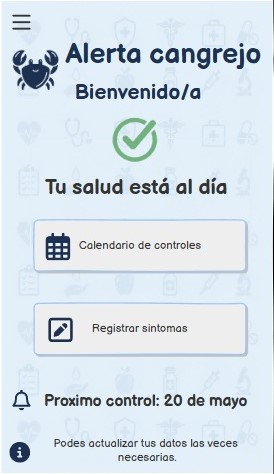
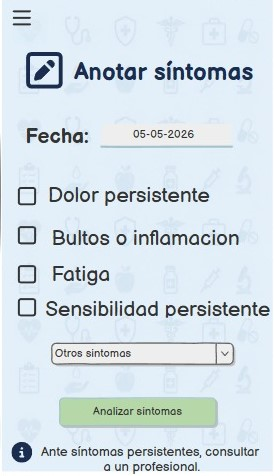
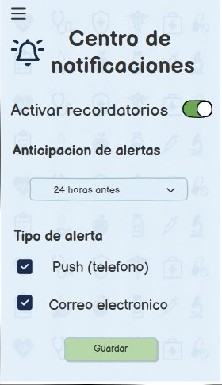

Descripción del proyecto
Alerta Cangrejo es una aplicación desarrollada como proyecto académico grupal, orientada a la prevención y concientización sobre el cáncer.
La aplicación permite consultar información relacionada con síntomas y llevar un registro para facilitar el seguimiento de determinadas situaciones.
Problema abordado
El proyecto busca brindar una herramienta sencilla que ayude a las personas a prestar atención a determinados síntomas y cambios en su salud.
Objetivo
Desarrollar una aplicación accesible que permita registrar síntomas y consultar información relacionada con señales de alerta, contribuyendo a la concientización y detección temprana.
Herramientas utilizadas
- MIT App Inventor
- Programación mediante bloques
- TinyDB para almacenamiento de información
Mi participación
En este apartado se detallará mi participación específica dentro del desarrollo del proyecto.
Trabajo en equipo
El proyecto fue realizado de manera grupal, trabajando en conjunto para analizar la problemática, definir las características de la aplicación y desarrollar la solución.
Imágenes del proyecto
Pantalla principal

Mis síntomas

Perfil

Recordame

Archivo del proyecto
El proyecto cuenta con su archivo fuente de MIT App Inventor en formato .AIA.
Próximamente se agregará el archivo para descargar.